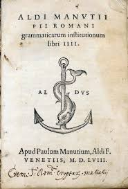
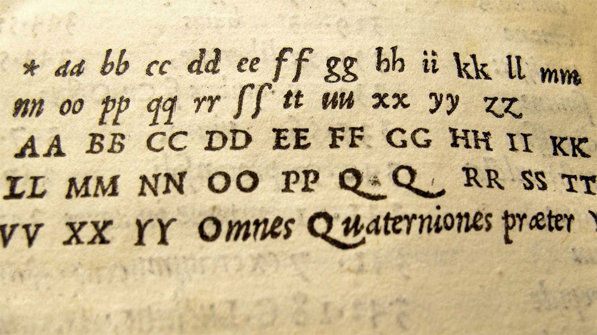
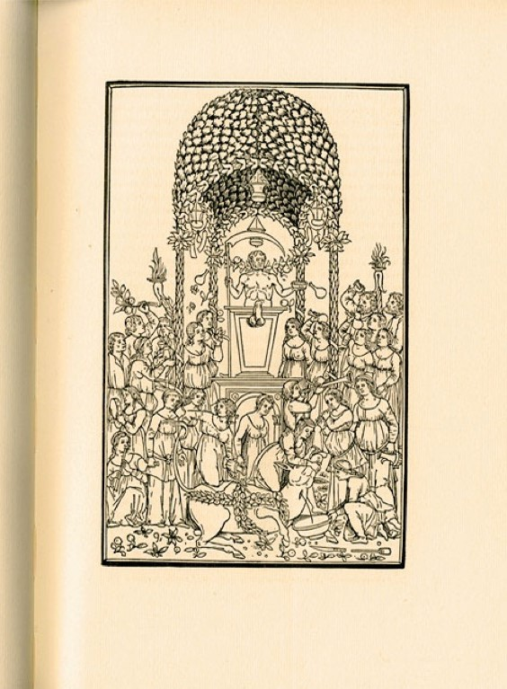
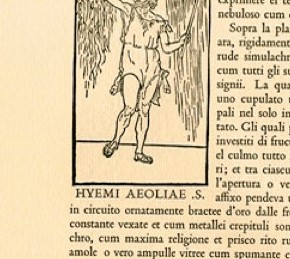
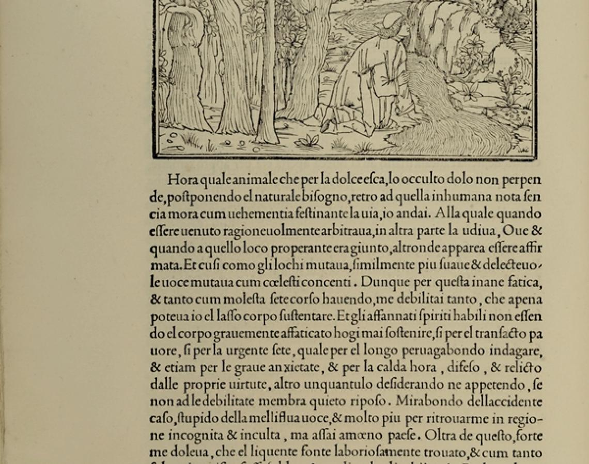
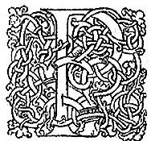
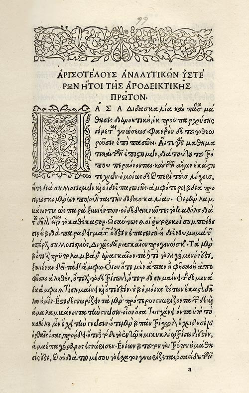
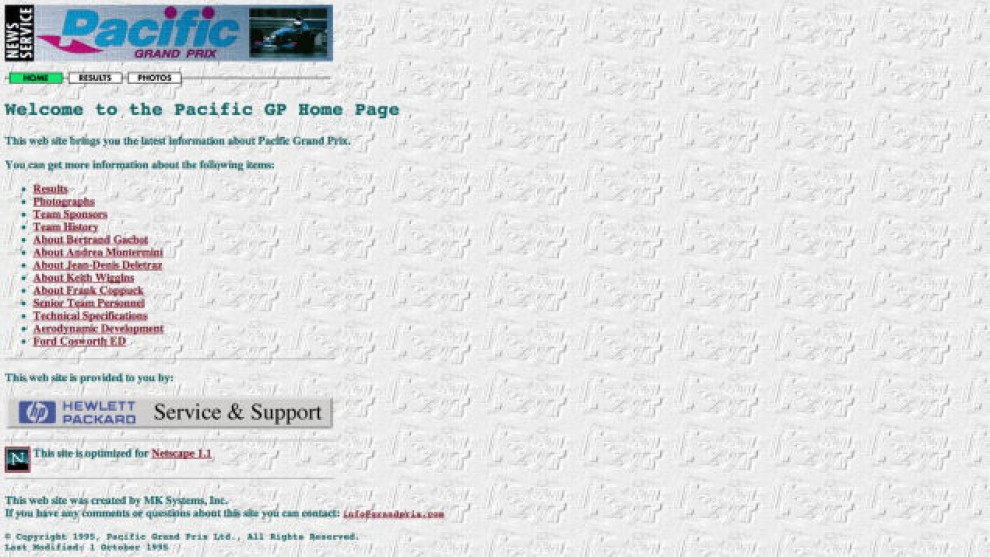
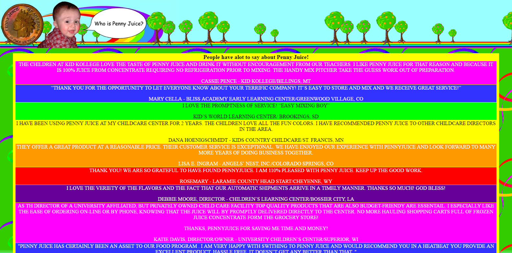
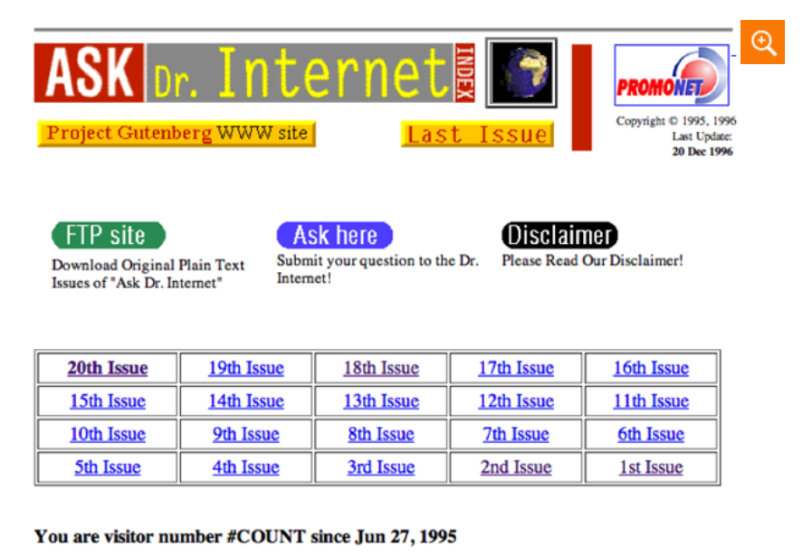

  The starting point for this theme are the “edizioni aldine”, the books printed by Aldo Manuzio, one of the major publishers of all time and one of the first modern publishers in Europe. Manuzio invented the so called “edizioni in ottavo”, opposed to the bulky incunabula of the previous decade. In this way, the act of reading became more easily accessible for everyone. Another innovation provided by Manuzio was the italic, specifically created for him by the engraver Francesco Griffo, in Bologna.

The printing mark of Manuzio represented an anchor surrounded by a dolphin and is displayed with the motto “festina lente” (slowly hurry up). This drawing is depicted on every first page of each edition.
To remind the layout of the pages, we used a parchment background-color and we set very wide margins, trying to reproduce the ratio with the following values. Checking some editions we observed that the ratio between margins follows this rules: 1 inner, 2 top, 2.5 outer, 3 bottom; and that the text occupies the 60% of the page width (that is 10-15 words for each line).
The font used for the theme is the Flanker Griffo font, which is one of the so called “veneziani” font, which tries to reproduce the typeface of the edizioni aldine. To try to make it more similar to the original one, we decreased the spacing between characters (letter-spacing) and we used only the bold and the italic versions. The first row of each paragraph is indented (text-indent).
  Images and tables are surrounded with a double frame, created using the border and the outline property. Captions are in uppercase and are situated in the lower part of the images.
  The pages of these editions are rather straight(?), but are characterized by floral decorations and decorated drop caps. To reproduce this effect, we used the drawing of an original dropcap, and we set it as background-image of every first letter of every section of the text.
Museo Aldo Manuziohttp://www.museoaldomanuzio.it/museo/aldo.html
Aldo Manuzio Wikipediahttps://it.wikipedia.org/wiki/Aldo_Manuzio
One of the new fashions of the moment that is catching on the web is the so-called "web brutalism". It was born in 2017 and is characterized by “raw” sites, cut to the bone, where text games are predominant and extraneous graphic elements between them can coexist and where usability and user experience are not priorities. This movement is designed to create an unexpected aesthetic alternative to the canons of today's web design.
Starting from this trend, we decided to recreate the look of the first websites, those of the 1990s, which were pure experimentation of a totally new world. The elements present in these "prehistoric" sites are what is most far from the concept of the web that we have today.
Thanks to the oldwebtoday site (http://oldweb.today/)(which allows to visualize the look of the web pages on a certain date) we were able to explore the websites starting from 1991. One of the features that we noticed is the pointer , which was black in color and which changed appearance when it was moved over a link, taking the form of a hand different from the one we know today. So we changed the appearance of the pointer thanks to the cursor and the a: hover properties.
Analyzing a series of documents, we noticed some features that we then recreated and applied to our documents. Below we can see them:
To make the effect even more realistic, the text has been enclosed within a monitor screen and when the page is opened you can hear the sound of the dial-up connection.
  Only 90s Web Developers Remember This https://zachholman.com/posts/only-90s-developers/
5 Old-School Web Design Trends Nobody Misses https://www.awwwards.com/5-old-school-web-design-trends-nobody-misses.html/
Ecco la Preistoria di Internet: 17 siti abbandonati (20 anni fa) che funzionano ancorahttps://www.3nz.it/1786/website-vecchi-abbandonati-funzionanti/
Oldweb Todayhttp://oldweb.today/
Web design: il ritorno degli anni ’90https://www.html.it/19/07/2017/web-design-il-ritorno-degli-anni-90/
13 Terrible Web Trends From the 90s, and How to Recreate Themhttps://envato.com/blog/13-terrible-web-trends-90s-recreate/
HTML Nostalgia: 10 Things From the 90shttps://icons8.com/articles/html-nostalgia-10-things-from-the-90s/
Gif Citieshttps://gifcities.org/